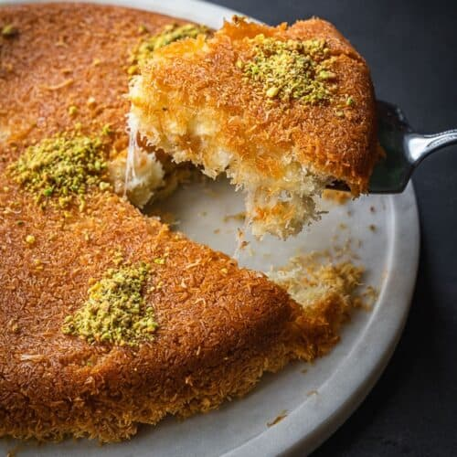

Knafeh

A Middle Eastern Pistachio and Cheese Delicacy
Kunafeh (also spelled Knafeh) is a beloved Middle Eastern dessert known for its crispy, golden layers of shredded phyllo dough (kataifi) or semolina crust, filled with gooey cheese or creamy custard. The dish is soaked in a fragrant sugar syrup, often infused with rose or orange blossom water, giving it a distinctive sweetness. It is typically garnished with crushed pistachios, adding a delightful crunch that complements the rich, buttery texture.
Originating from the Levant region, Kunafeh has many variations across different Middle Eastern countries. In Palestine and Jordan, it is commonly made with Nabulsi cheese, while in Egypt, a softer, cream-filled version is popular. Whether served hot and fresh from the oven or enjoyed with a scoop of ice cream, this indulgent dessert remains a staple at celebrations and gatherings, symbolizing warmth and hospitality.
Knafeh is one of my favorite desserts. I grew up enjoying eating knafeh during many occasions, festivities, and celebrations.
Ingredients
- 1/2 pound of Kataifi (8 OZ) (half of the bag)
- 1 pound of cheese
- 1/2 cup unsalted butter or ghee
- 1/4 crushed pistachios
- 1 cup sugar syrup
Steps
- Take out the frozen kataifi dough and let it thaw for 2-3 hours before using.
- Preheat oven to 350F.
- Shred the cheese or cut it into small pieces.
- Shred the kataifi dough by placing it in a food processor or with a knife.
- Once shredded, place kataifi dough in a bowl and pour over melted butter and coloring (optional). Using your hands, massage the butter into the dough making sure everything is well integrated.
- Grease the bottom of the pan with some butter. Use a 9-inch pan. If using the entire kataifi bag, use an 18-inch pan.
- Spread the majority of the dough, leaving about ¼ for the top.
- Add shredded cheese on top, and press well either by the palm of your hand or with the bottom of a glass.
- Take the remaining kataifi dough, spread it over the cheese, and press well again either by hand or with the bottom of a glass.
- Bake for 20-30 minutes or until the edges are deeply golden and crispy, and the cheese is melted. You can check the cheese with a fork.
- Take it out of the oven, and carefully flip it into another (same size or slightly larger) platter, then immediately drizzle the knafeh with about ½-¾ of the warm sugar syrup, ensuring you cover the full surface. Reserve the remaining syrup for anyone who wants extra.
- Sprinkle crushed pistachios on top.
- Cut into pieces and serve hot.
Back to Home